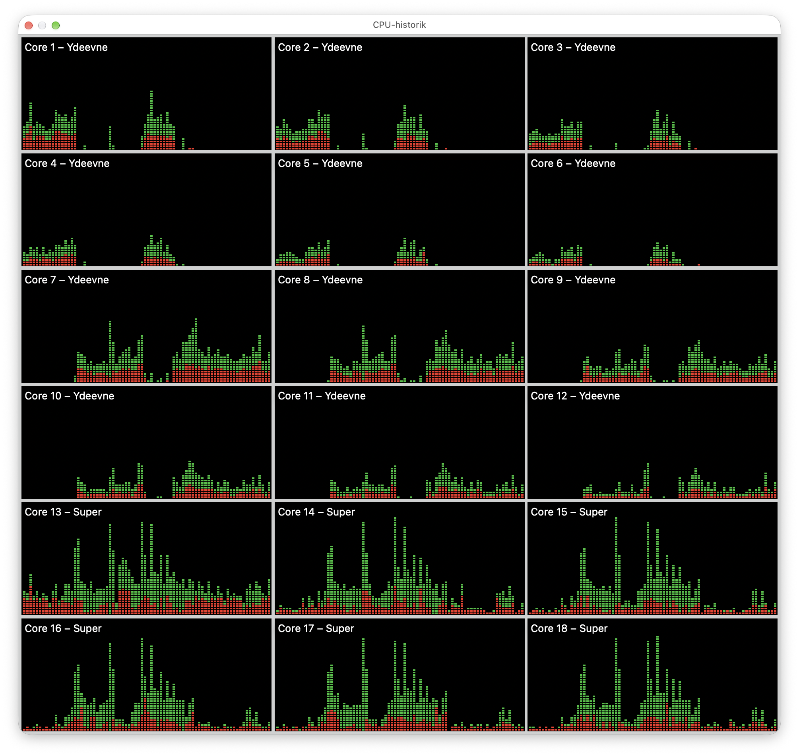

Explorations into parallel computing
Having a computer with a lot of CPU cores is very nice, but it does invite a question: am I actually using them? In So, someone gave you some Wolfram Language Code?, I mentioned being able to run many Wolfram kernels in parallel on my Mac. Well, here is a small exploration of what that looks like, including in C++, JavaScript, and Julia.
It started with a simple calculation and ended with me having to look a bit harder at my Wolfram Language code. C++ and even JavaScript were orders of magnitude faster than my first WL version. That was somewhat annoying.
The code is available at
At first.
Something for the computer to do

The calculation is deliberately uninteresting: add up the square roots of all integers from zero up to, but excluding, some number n.
Do this eight times. First one calculation after another, then let the computer work on several of them at once.
Each calculation keeps its own running sum and returns one number. There is no file to read, no network to wait for, and no large matrix to send between workers. The eight jobs don't need to talk to each other. Quite a comfortable introduction to parallel computing, really.
Also, I am not splitting one sum into eight pieces. Each worker calculates a complete sum, in the same order as the sequential version. That makes it straightforward to check that the sequential and parallel result lists are identical. It is a useful check, although it doesn't establish agreement between different languages or prove that the floating-point result is the exact mathematical sum.
First, the obvious Wolfram version
In Wolfram Language, the attraction is how little needs to change. Apply a function to a list with Map; apply it in parallel with ParallelMap. Start some kernels, make sure they know the function, and off we go.
This is parallel.wls, with eight jobs of five million square roots each:
f[n_] := Module[{s = 0.},
Do[s += Sqrt[N[i]], {i, 0, n - 1}];
s];
inputs = ConstantArray[5000000, 8];
noOfKernels = 8;
(*Echo["start "<>ToString[noOfKernels]<>" kernels."];*)
(*Start workers before measuring.*)
LaunchKernels[noOfKernels];
DistributeDefinitions[f];
(*Echo["Warm up the kernels"];*)
f[1000];
ParallelEvaluate[f[1000]];
(*One calculation at a time*)
(*Echo["Calculate using one kernel"];*)
{t1, a} = AbsoluteTiming[Map[f, inputs]];
(*Several calculations at a time*)
(*Echo["Calculate using "<>ToString[noOfKernels]<>" kernels"];*)
{tp, b} = AbsoluteTiming[ParallelMap[f, inputs]];
Print["Wolfram naive"];
Print["Workers: ",$KernelCount]
Print["Sequential seconds: ",t1]
Print["Parallel seconds: ",tp]
Print["Speedup: ",t1/tp]
Print["Same result: ",(a===b)]
The 0. and N[i] are intentional. I want ordinary machine-number arithmetic, rather than an enormous expression containing exact square roots.
One run on my MacBook Pro M5 Max used eight workers and took about 8.57 seconds sequentially and 1.184 seconds in parallel. A speedup of 7.24, with identical results. That is quite pleasing for such a small change in the code! See a table with all results at the end of the page.
But a sevenfold improvement only tells me how much faster this particular implementation becomes when several kernels work on it. It says nothing about how good the implementation was in the first place. That distinction became rather hard to ignore when I tried the other languages.
C++
The C++ version has the same loop, using a double for the sum. For the parallel part, std::async with std::launch::async starts the jobs, and the futures give me the results when they are ready. All jobs are launched before I start collecting their answers.
Here is parallel.cpp. This version has already been turned up to 500 million square roots per job:
#include <chrono>
#include <cmath>
#include <future>
#include <iostream>
#include <vector>
double f(int n) {
double s = 0;
for (int i = 0; i < n; ++i) s += std::sqrt(double(i));
return s;
}
int main() {
using Clock = std::chrono::steady_clock;
std::vector<int> inputs(8, 500'000'000);
std::vector<double> a, b;
auto start = Clock::now();
for (int n : inputs) a.push_back(f(n));
double t1 = std::chrono::duration<double>(Clock::now() - start).count();
start = Clock::now();
std::vector<std::future<double>> tasks;
for (int n : inputs)
tasks.push_back(std::async(std::launch::async, f, n));
for (auto& task : tasks) b.push_back(task.get());
double tp = std::chrono::duration<double>(Clock::now() - start).count();
std::cout << "C++\n";
std::cout << "Sequential: " << t1 << " s\n";
std::cout << "Parallel: " << tp << " s\n";
std::cout << "Speedup: " << t1 / tp << " s\n";
std::cout << "Same results: " << std::boolalpha << (a == b) << '\n';
}Compile it with optimisation enabled and run it:
clang++ -O2 -std=c++17 parallel.cpp -o parallelcpp
./parallelcppThe speedup is simply the sequential time divided by the parallel time, so it has no unit. The actual arithmetic remains a small loop; most of the program is concerned with starting work, waiting for it, and measuring it.
A test run took 2.074 s sequentially and 0.255 s in parallel. A speedup of 8.13, with identical results.
JavaScript, too
JavaScript was another pleasant reminder that a language I use for small web tools can also get through a lot of numerical work. Here it runs in Node.js, with actual worker threads.
The promises collect the answers; the workers do the parallel computation. Just putting eight ordinary calls to f inside promises would not make that loop run on eight cores.
Here is parallel.mjs, also using 500 million square roots per job. The same file serves as both the main program and the worker:
import { Worker, isMainThread, parentPort, workerData }
from 'node:worker_threads';
function f(n) {
let s = 0;
for (let i = 0; i < n; i++) s += Math.sqrt(i);
return s;
}
function inWorker(n) {
return new Promise((resolve, reject) => {
const worker = new Worker(new URL(import.meta.url), {
workerData: n
});
worker.once('message', resolve);
worker.once('error', reject);
worker.once('exit', code => {
if (code !== 0) reject(new Error(`Worker exit: ${code}`));
});
});
}
if (!isMainThread) {
parentPort.postMessage(f(workerData));
} else {
const inputs = Array(8).fill(500_000_000);
let start = performance.now();
const a = inputs.map(f);
const t1 = performance.now() - start;
start = performance.now();
const b = await Promise.all(inputs.map(inWorker));
const tp = performance.now() - start;
console.log('Node JavaScript');
console.log(`Sequential: ${t1.toFixed(1)/1000} s`);
console.log(`Parallel: ${tp.toFixed(1)/1000} s`);
console.log('Speedup:', t1 / tp);
console.log('Same results:', a.every((x, i) => x === b[i]));
}node parallel.mjsNo extra packages required. Quite nice.
The test run took 1.89 s sequentially and 0.268 s in parallel. A speedup of 7.07, with identical results.
And Julia
Julia belongs in this exploration, too. It was one of the languages that sent me back to the numerical methods in Re-learning something about scientific computing. Here, there is no LAPACK call to hide the loop inside. Just the same square roots and running sum.
This is parallel.jl, with eight jobs of 500 million square roots each:
function f(n)
s = 0.0
for i in 0:n-1
s += sqrt(Float64(i))
end
s
end
function parallel_map(f, inputs)
results = zeros(length(inputs))
Threads.@threads for i in eachindex(inputs)
results[i] = f(inputs[i])
end
results
end
inputs = fill(500_000_000, 8)
# Warm up both paths before timing compilation-free calls.
map(f, [1000])
parallel_map(f, [1000])
t1 = @elapsed a = map(f, inputs)
tp = @elapsed b = parallel_map(f, inputs)
println("Julia")
println("Threads: ", Threads.nthreads())
println("Sequential: $t1 s")
println("Parallel: $tp s")
println("Speedup: ", t1 / tp)
println("Same results: ", a == b)
The little parallel_map function is mine. It allocates the result array and uses Threads.@threads to distribute the outer loop. Each iteration calculates one complete sum and writes to its own array element, so the iterations don't compete to update the same answer. The numerical function f is shared by the sequential and parallel versions.
Start Julia with eight threads available for this work:
julia --threads=8 parallel.jlThe Julia threading manual also describes --threads=auto, which lets Julia choose a thread count. Here I prefer the explicit eight and print Threads.nthreads() to check the default pool's size.
The two small calls before the timers are there for a familiar reason: compilation. The first visit to a function can include the work of compiling it, so the script exercises both paths with a small input before measuring the larger calculation. That detail also came up in the determinant story. Apparently, remembering to ask what the clock includes is becoming a recurring theme.
The test run took 1.917 s for the sequential run and 0.251 s for the parallel, giving a 7.63× speedup, with identical results.
Who decides how many cores to use?
There is a difference here that is easy to miss. In the Wolfram code, I explicitly ask for a number of kernels; with Julia, I choose a thread count at startup. In the C++ and JavaScript code, I start the work and leave its execution to the operating system. But what, precisely, am I leaving to it?
In a fresh Wolfram session, LaunchKernels[8] requests eight local subkernels. These are separate Wolfram processes, each with its own definitions and state, which is why I use DistributeDefinitions. The main kernel hands work to this pool and collects the results. The pool can stay running and handle the next calculation, too.
The number of jobs and the size of that pool are separate choices. I could hand eighty sums to eight kernels, and the kernels would work through them. With only eight sums, launching sixteen kernels would leave some without a sum to calculate. There is no extra work for them to share, as each sum still runs as one sequential loop.
A small practical detail: LaunchKernels[8] can add kernels to ones already running. It does not mean “make the total exactly eight”. That matters when repeating an experiment in a notebook; check $KernelCount. WL also has LaunchKernels[] for the configured defaults, so choosing the count explicitly is a choice I made for this experiment.
In the JavaScript version, the count is hiding in the input list. Eight inputs lead to eight calls to new Worker, and therefore eight worker threads. Node.js doesn't look at my computer and choose a suitable pool size here. I have chosen the worker count by creating one worker per job. If I changed the list to eighty inputs, this little program would try to create eighty workers. A reusable pool would be a different implementation; the Node.js documentation recommends that approach when repeatedly handing out work.
C++ is similar in this example. There are eight calls to std::async, and the explicit std::launch::async policy requests execution as if in a new thread for each call. I am asking for eight asynchronous jobs, rather than asking C++ to select a sensible number of workers. The policy matters: without it, the implementation may defer the calculation until I ask for the result.
Julia gives me another pool, this time of threads within one process. With --threads=8, eighty inputs would be distributed over the existing pool, rather than creating eighty threads. Julia schedules the loop's work onto those threads; the operating system schedules the threads onto CPU cores. Unlike the separate WL kernels, these threads share the program's memory, so there is no corresponding step to distribute the definition of f.
What the operating system decides is when those threads get CPU time and on which cores they run. Eight workers don't reserve eight cores for me, and they may have to share the machine with everything else I am running. The same applies to the local Wolfram subkernels: choosing eight kernels doesn't pin each one to a particular core. macOS still schedules their execution.
So, I choose a kernel pool in WL and a thread pool in Julia, while these particular JS and C++ programs create a worker or asynchronous execution for each input. In all four, the operating system has the final say over CPU time. That makes the number eight rather less magical than it first appears. It describes how I have organised the work, not a promise from the computer.
Okay, Wolfram, let's try that again
So, the parallel WL version was substantially faster than the sequential WL version, but the other languages made my little loop look embarrassingly slow. I had written something that looked much like the C++ loop and apparently expected it to behave much like the C++ loop.
That expectation needed some work.
Even with machine numbers, the first version still asks the general Wolfram evaluator to work through the loop. For this calculation, I don't need most of that generality. I know what the input is, I know what the accumulator is, and I want the computer to repeatedly take a square root and add it to a number.
Enter FunctionCompile, which compiles a function to native machine code. Here I specify a 64-bit integer input with Typed and explicitly convert the loop index to a 64-bit real with Cast. The calculation itself is still the same loop.
This is the resulting parallel-fast.wls:
compiledF = FunctionCompile[
Function[Typed[n, "Integer64"],
Module[{sum = 0.},
Do[sum += Sqrt[Cast[i, "Real64"]], {i, 0, n - 1}];
sum
]
]
];
noOfKernels = 8;
inputs = ConstantArray[500000000, noOfKernels];
(*Echo["start "<>ToString[noOfKernels]<>" kernels."];*)
LaunchKernels[noOfKernels];
DistributeDefinitions[compiledF];
(*Echo["Warm up the kernels"];*)
compiledF[1000];
ParallelEvaluate[compiledF[1000], DistributedContexts -> None];
(*Echo["Compute using one kernel"];*)
{t1, serial} = AbsoluteTiming[Map[compiledF, inputs]];
(*Echo["Compute using "<>ToString[noOfKernels]<>" kernels"];*)
{tp, parallel} =
AbsoluteTiming[
ParallelMap[compiledF, inputs,
DistributedContexts -> None,
Method -> "FinestGrained"
]
];
Print["Wolfram fast"];
Print["Workers: ", $KernelCount];
Print["Sequential seconds: ", t1];
Print["Parallel seconds: ", tp];
Print["Speedup: ", t1/tp];
Print["Same result: ", (serial === parallel)];Now WL was fast, too. Fast enough that this version, like C++, JavaScript, and Julia, uses 500 million iterations per job instead of five million. That is a hundred times as much work; it is not, by itself, a measurement of a hundredfold speedup.
The important change happened inside the function. ParallelMap still distributes eight independent calculations, and Method -> "FinestGrained" asks it to schedule individual list elements. Compiling the numerical work and distributing that work are two separate improvements.
This reminded me of Re-learning something about scientific computing, where a comparison of large determinants sent me back to the numerical methods underneath the language. This time, the useful question was what happened to all those iterations of my loop. Apparently, I can still be surprised by code I have written in a system I have used for decades. Which is part of the fun, I suppose.
What is the clock measuring?
Using theMakefile target demo runs all demonstrations, which can easily be transformed into the below table.
| Implementation | Sequential (s) | Parallel (s) | Speedup | Same results |
|---|---|---|---|---|
| Wolfram naive | 8.576713 | 1.183980 | 7.24× | Yes |
| Wolfram fast | 2.111855 | 0.276614 | 7.63× | Yes |
| C++ | 2.073970 | 0.255112 | 8.13× | Yes |
| Julia | 1.917244 | 0.251173 | 7.63× | Yes |
| Node.js JavaScript | 1.893500 | 0.267800 | 7.07× | Yes |
There is another familiar detail here: starting the runtime takes time. I wrote about that in Quickly, run a Wolfram script. In these WL scripts, launching kernels, distributing definitions, compiling, and warming up happen before the timed calculations. The stopwatch measures work in an already running system.
Julia likewise starts its thread pool before these measurements, and the small warm-up calls aim to keep initial compilation out of the timings. The parallel timer still includes scheduling the loop and collecting its results.
The Node.js parallel timer, on the other hand, includes creating a fresh worker for each job. The C++ timer includes launching its asynchronous jobs. These little programs therefore don't all draw the timing boundary in quite the same place.
Nor do the current files all use the same input size: the original WL version uses five million, while C++, JavaScript, Julia, and compiled WL use 500 million. I have kept those values in the listings as they stand in the exploration. To make a comparison between languages, first make the workloads equal, decide what to include in the timings, and repeat the measurements. The saved 6.98-fold WL result above belongs to the original five-million calculation.
So, these are small experiments, not a league table of programming languages. They show how I can run independent calculations in parallel, and how easily a comparison can turn into a comparison of quite different things.
If you want to run the WL scripts, save the respective listings under their filenames and use:
wolframscript -file parallel.wls
wolframscript -file parallel-fast.wlsFor getting a Wolfram runtime in the first place, see the practical part of my earlier post. These examples request eight subkernels; the number available depends on the installation and licence, so check the printed worker count.
And Python?
There is a Python version, too, using ProcessPoolExecutor, but I didn't get it working in this exploration. I left it there. As I have mentioned before, the Python train left the station without me. This was apparently not the day I managed to catch it 😉
Anyway, I now have four ways of giving those CPU cores something to do, and one more reason to look closely at a slow Wolfram function before blaming Wolfram. I still like having all those batteries included. Sometimes I just need to learn how to use them.